Tutorial¶
Introduction¶
Class vegas.Integrator gives Monte Carlo estimates of arbitrary
multidimensional integrals using the vegas algorithm
(G. P. Lepage, J. Comput. Phys. 27 (1978) 192).
The algorithm has two components.
First an automatic transformation is applied to to the integration variables
in an attempt to flatten the integrand. Then a Monte Carlo estimate of the
integral is made using the transformed variables. Flattening the integrand
makes the integral easier and improves the estimate. The transformation
applied to the integration variables is optimized
over several iterations of the algorithm: information about the integrand that
is collected during one iteration is used to improve the transformation used
in the next iteration.
Monte Carlo integration makes few assumptions about the integrand — it needn’t be analytic nor even continuous. This makes Monte Carlo integation unusually robust. It also makes it well suited for adaptive integration. Adaptive strategies are essential for multidimensional integration, especially in high dimensions, because multidimensional space is large, with lots of corners, making it easy to lose important features in the integrand.
Monte Carlo integration also provides efficient and reliable methods for estimating the accuracy of its results. In particular, each Monte Carlo estimate of an integral is a random number from a distribution whose mean is the correct value of the integral. This distribution is Gaussian or normal provided the number of integrand samples is sufficiently large. In practive we generate multiple estimates of the integral in order to verify that the distribution is indeed Gaussian. Error analysis is straightforward if the integral estimates are Gaussian.
The vegas algorithm has been in use for decades and implementations are
available in many programming languages, including Fortran (the original
version), C and C++. The algorithm used here is significantly improved over
the original implementation, and that used in most other implementations.
It uses two adaptive strategies: importance sampling, as in the original
implementation, and adaptive stratified sampling, which is new.
This module is written in Cython, so it is almost as fast as compiled Fortran or C, particularly when the integrand is also coded in Cython (or some other compiled language), as discussed below.
The following sections describe how to use vegas. Almost every
example shown is a complete code, which can be copied into a file
and run with python. It is worthwhile playing with the parameters to see how
things change.
About Printing: The examples in this tutorial use the print function as it is used in Python 3. Drop the outermost parenthesis in each print statement if using Python 2, or add
from __future__ import print_function
at the start of your file.
Basic Integrals¶
Here we illustrate the use of vegas by estimating the integral
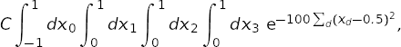
where constant is chosen so that the exact integral is 1. The following code shows how this can be done:
import vegas
import math
def f(x):
dx2 = 0
for d in range(4):
dx2 += (x[d] - 0.5) ** 2
return math.exp(-dx2 * 100.) * 1013.2118364296088
integ = vegas.Integrator([[-1, 1], [0, 1], [0, 1], [0, 1]])
result = integ(f, nitn=10, neval=1000)
print(result.summary())
print('result = %s Q = %.2f' % (result, result.Q))
First we define the integrand f(x) where x[d] specifies a point in the
4-dimensional space. We then create an integrator, integ, which is an
integration operator that can be applied to any 4-dimensional function. It is
where we specify the integration volume.
Finally we apply integ to our integrand f(x),
telling the integrator to estimate the integral using nitn=10 iterations
of the vegas algorithm, each of which uses no more than neval=1000
evaluations of the integrand. Each iteration produces an independent
estimate of the integral. The final estimate is the weighted average of
the results from all 10 iterations, and is returned by integ(f ...).
The call result.summary() returns
a summary of results from each iteration.
This code produces the following output:
itn integral wgt average chi2/dof Q
-------------------------------------------------------
1 2.4(1.9) 2.4(1.9) 0.00 1.00
2 1.19(32) 1.23(32) 0.42 0.52
3 0.910(90) 0.934(87) 0.68 0.51
4 1.041(70) 0.999(55) 0.76 0.52
5 1.090(43) 1.055(34) 1.00 0.41
6 0.984(34) 1.020(24) 1.24 0.29
7 1.036(27) 1.027(18) 1.07 0.38
8 0.987(22) 1.011(14) 1.20 0.30
9 0.995(18) 1.005(11) 1.11 0.35
10 0.993(17) 1.0015(91) 1.02 0.42
result = 1.0015(91) Q = 0.42
There are several things to note here:
Adaptation: Integration estimates are shown for each of the 10 iterations, giving both the estimate from just that iteration, and the weighted average of results from all iterations up to that point. The estimates from the first two iterations are not accurate at all, with errors equal to 30–190% of the final result.
vegasinitially has no information about the integrand and so does a relatively poor job of estimating the integral. It uses information from the samples in one iteration, however, to remap the integration variables for subsequent iterations, concentrating samples where the function is largest and reducing errors. As a result, the per-iteration error is reduced to 4.3% by the fifth iteration, and below 2% by the end — an improvement by almost two orders of magnitude from the start. Eventually the per-iteration error stops decreasing becausevegashas found the optimal remapping, at which point it has fully adapted to the integrand.Weighted Average: The final result, 1.0015 ± 0.0091, is obtained from a weighted average of the separate results from each iteration: estimates are weighted by the inverse variance, thereby giving much less weight to the early iterations, where the errors are largest. The individual estimates are statistical: each is a random number drawn from a distribution whose mean equals the correct value of the integral, and the errors quoted are estimates of the standard deviations of those distributions. The distributions are Gaussian provided the number of integrand evaluations per iteration (
neval) is sufficiently large, in which case the standard deviation is a reliable estimate of the error. The weighted average minimizes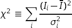
where 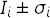 are the estimates from individual iterations. If the 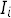 are Gaussian, 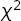 should be of order the number of degrees of freedom (plus or minus the square root of that number); here the number of degrees of freedom is the number of iterations minus 1.
The distributions are likely non-Gaussian, and error estimates unreliable, if is much larger than the number of iterations. This criterion is quantified by the Q or p-value of the , which is the probability that a larger could result from random (Gaussian) fluctuations. A very small Q (less than 0.05-0.1) indicates that the is too large to be accounted for by statistical fluctuations — that is, the estimates of the integral from different iterations do not agree with each other to within errors. This means that
nevalis not sufficiently large to guarantee Gaussian behavior, and must be increased if the error estimates are to be trusted.
integ(f...)returns a weighted-average object, of typevegas.RAvg, that has the following attributes:
result.mean— weighted average of all estimates of the integral;
result.sdev— standard deviation of the weighted average;
result.chi2— of the weighted average;
result.dof— number of degrees of freedom;
result.Q— Q or p-value of the weighted average’s ;
result.itn_results— list of the integral estimates from each iteration.In this example the final Q is 0.42, indicating that the for this average is not particularly unlikely and thus the error estimate is most likely reliable.
Precision: The precision of
vegasestimates is determined bynitn, the number of iterations of thevegasalgorithm, and byneval, the maximum number of integrand evaluation made per iteration. The computing cost is typically proportional to the product ofnitnandneval. The number of integrand evaluations per iteration varies from iteration to iteration, here between 486 and 959. Typicallyvegasneeds more integration points in early iterations, before it has fully adapted to the integrand.We can increase precision by increasing either
nitnorneval, but it is generally far better to increaseneval. For example, adding the following lines to the code aboveresult = integ(f, nitn=100, neval=1000) print('larger nitn => %s Q = %.2f' % (result, result.Q)) result = integ(f, nitn=10, neval=1e4) print('larger neval => %s Q = %.2f' % (result, result.Q))generates the following results:
larger nitn => 0.9968(15) Q = 0.43 larger neval => 0.99978(67) Q = 0.42The total number of integrand evaluations,
nitn * neval, is about the same in both cases, but increasingnevalis more than twice as accurate as increasingnitn. Typically you want to use no more than 10 or 20 iterations beyond the point wherevegashas fully adapted. You want some number of iterations so that you can verify Gaussian behavior by checking the and Q, but not too many.It is also generally useful to compare two or more results from values of
nevalthat differ by a significant factor (4–10, say). These should agree within errors. If they do not, it could be due to non-Gaussian artifacts caused by a smallneval.vegasestimates have two sources of error. One is the statistical error, which is what is quoted byvegas. The other is a systematic error due to residual non-Gaussian effects. The systematic error vanishes like1/nevaland so becomes negligible compared with the statistical error asnevalincreases. The systematic error can bias the Monte Carlo estimate, however, ifnevalis insufficiently large. This usually results in a large (and small Q), but a more reliable check is to compare results that use signficantly different values ofneval. The systematic errors due to non-Gaussian behavior are likely negligible if the different estimates agree to within the statistical errors.The possibility of systematic biases is another reason for increasing
nevalrather thannitnto obtain more precision. Makingnevallarger and larger is guaranteed to improve the Monte Carlo estimate, as the statistical error decreases (at least as fast assqrt(1/neval)and often faster) and the systematic error decreases even more quickly (like1/neval). Makingnitnlarger and larger, on the other hand, is guaranteed eventually to give the wrong answer. This is because at some point the statistical error (which falls assqrt(1/nitn)) will no longer mask the systematic error (which is unaffected bynitn). The systematic error for the integral above (withneval=1000) is about -0.0008(1), which is negligible compared to the statistical error unlessnitnis of order 1500 or larger — so systematic errors aren’t a problem withnitn=10.Early Iterations: Integral estimates from early iterations, before
vegashas adapted, can be quite crude. With very peaky integrands, these are often far from the correct answer with highly unreliable error estimates. For example, the integral above becomes more difficult if we double the length of each side of the integration volume by redefiningintegas:integ = vegas.Integrator([[-2, 2], [0, 2], [0, 2], [0., 2]])The code above then gives:
itn integral wgt average chi2/dof Q ------------------------------------------------------- 1 0.013(13) 0.013(13) 0.00 1.00 2 0.0165(80) 0.0154(67) 0.07 0.79 3 2.07(96) 0.0155(67) 2.31 0.10 4 0.86(26) 0.0160(67) 5.06 0.00 5 1.01(11) 0.0199(67) 25.01 0.00 6 0.963(64) 0.0302(67) 63.06 0.00 7 1.032(41) 0.0561(66) 149.77 0.00 8 0.924(31) 0.0924(64) 232.41 0.00 9 1.037(28) 0.1410(63) 341.52 0.00 10 0.976(22) 0.2026(60) 448.77 0.00 result = 0.2026(60) Q = 0.00
vegasmisses the peak completely in the first two iterations, giving estimates that are completely wrong (by 76 and 123 standard deviations!). Some of its samples hit the peak’s shoulders, sovegasis eventually able to find the peak (by iterations 5–6), but the integrand estimates are wildly non-Gaussian before that point. This results in a nonsensical final result, as indicated by theQ = 0.00.It is common practice in using
vegasto discard estimates from the first several iterations, before the algorithm has adapted, in order to avoid ruining the final result in this way. This is done by replacing the single call tointeg(f...)in the original code with two calls:# step 1 -- adapt to f; discard results integ(f, nitn=7, neval=1000) # step 2 -- integ has adapted to f; keep results result = integ(f, nitn=10, neval=1000) print(result.summary()) print('result = %s Q = %.2f' % (result, result.Q))The integrator is trained in the first step, as it adapts to the integrand, and so is more or less fully adapted from the start in the second step, which yields:
itn integral wgt average chi2/dof Q ------------------------------------------------------- 1 1.042(26) 1.042(26) 0.00 1.00 2 1.010(18) 1.020(15) 0.99 0.32 3 0.999(14) 1.009(10) 1.05 0.35 4 0.965(16) 0.9963(86) 2.47 0.06 5 0.994(15) 0.9958(74) 1.86 0.11 6 1.001(15) 0.9968(66) 1.51 0.18 7 0.999(15) 0.9971(61) 1.26 0.27 8 0.994(13) 0.9965(55) 1.09 0.37 9 1.017(22) 0.9977(53) 1.05 0.39 10 0.981(16) 0.9961(50) 1.04 0.40 result = 0.9961(50) Q = 0.40The final result is now reliable.
Other Integrands: Once
integhas been trained onf(x), it can be usefully applied to other functions with similar structure. For example, adding the following at the end of the original code,def g(x): return x[0] * f(x) result = integ(g, nitn=10, neval=1000) print(result.summary()) print('result = %s Q = %.2f' % (result, result.Q))gives the following new output:
itn integral wgt average chi2/dof Q ------------------------------------------------------- 1 0.5015(83) 0.5015(83) 0.00 1.00 2 0.5099(68) 0.5065(53) 0.61 0.43 3 0.4992(73) 0.5040(43) 0.63 0.53 4 0.5121(61) 0.5066(35) 0.81 0.49 5 0.5046(73) 0.5062(32) 0.62 0.65 6 0.4918(63) 0.5033(28) 1.34 0.25 7 0.5053(99) 0.5035(27) 1.12 0.35 8 0.4997(69) 0.5030(25) 1.00 0.43 9 0.5016(81) 0.5029(24) 0.88 0.54 10 0.4951(75) 0.5021(23) 0.88 0.54 result = 0.5021(23) Q = 0.54Again the grid is almost optimal for
g(x)from the start, becauseg(x)peaks in the same region asf(x). The exact value for this integral is very close to 0.5.Note that
vegas.Integrators can be saved in files and reloaded later using Python’spicklemodule: for example,pickle.dump(integ, openfile)saves integratorintegin fileopenfile, andinteg = pickle.load(openfile)reloads it. The is useful for costly integrations that might need to be reanalyzed later since the integrator remembers the variable transformations made to minimize errors, and so need not be readapted to the integrand when used later.Non-Rectangular Volumes:
vegascan integrate over volumes of non-rectangular shape. For example, we can replace integrandf(x)above by the same Gaussian, but restricted to a 4-sphere of radius 0.2, centered on the Gaussian:import vegas import math def f_sph(x): dx2 = 0 for d in range(4): dx2 += (x[d] - 0.5) ** 2 if dx2 < 0.2 ** 2: return math.exp(-dx2 * 100.) * 1115.3539360527281318 else: return 0.0 integ = vegas.Integrator([[-1, 1], [0, 1], [0, 1], [0, 1]]) integ(f_sph, nitn=10, neval=1000) # adapt the grid result = integ(f_sph, nitn=10, neval=1000) # estimate the integral print(result.summary()) print('result = %s Q = %.2f' % (result, result.Q))The normalization is adjusted to again make the exact integral equal 1. Integrating as before gives:
itn integral wgt average chi2/dof Q ------------------------------------------------------- 1 1.005(41) 1.005(41) 0.00 1.00 2 1.055(37) 1.033(27) 0.82 0.37 3 1.048(63) 1.035(25) 0.43 0.65 4 1.051(63) 1.037(23) 0.31 0.82 5 0.994(23) 1.015(16) 0.68 0.61 6 1.008(33) 1.014(15) 0.55 0.74 7 1.030(34) 1.016(13) 0.49 0.82 8 0.971(18) 1.000(11) 0.99 0.43 9 1.005(34) 1.001(10) 0.87 0.54 10 1.039(29) 1.0049(97) 0.94 0.48 result = 1.0049(97) Q = 0.48It is a good idea to make the actual integration volume as large a fraction as possible of the total volume used by
vegas— by choosing integration variables properly — sovegasdoesn’t spend lots of effort on regions where the integrand is exactly 0. Also, it can be challenging forvegasto find the region of non-zero integrand in high dimensions: integratingf_sph(x)in 20 dimensions instead of 4, for example, would requireneval=1e16integrand evaluations per iteration to have any chance of finding the region of non-zero integrand, because the volume of the 20-dimensional sphere is a tiny fraction of the total integration volume. The final error in the example above would have been cut in half had we used the integration volume4 * [[0.3, 0.7]]instead of[[-1, 1], [0, 1], [0, 1], [0, 1]].Note, finally, that integration to infinity is also possible: map the relevant variable into a different variable of finite range. For example, an integral over
from 0 to infinity is easily reexpressed as an integral over from 0 to 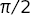.
Damping: This result in the previous section can be improved somewhat by slowing down
vegas’s adaptation:... integ(f_sph, nitn=10, neval=1000, alpha=0.1) result = integ(f_sph, nitn=10, neval=1000, alpha=0.1) ...Parameter
alphacontrols the speed with whichvegasadapts, with smalleralphas giving slower adaptation. Here we reducealphato 0.1, from its default value of 0.5, and get the following output:itn integral wgt average chi2/dof Q ------------------------------------------------------- 1 1.004(21) 1.004(21) 0.00 1.00 2 0.988(24) 0.997(16) 0.26 0.61 3 1.023(24) 1.005(13) 0.56 0.57 4 0.996(19) 1.002(11) 0.43 0.73 5 1.009(25) 1.0032(99) 0.34 0.85 6 0.981(22) 0.9995(90) 0.44 0.82 7 1.010(22) 1.0010(84) 0.40 0.88 8 0.979(20) 0.9978(77) 0.48 0.85 9 1.068(25) 1.0037(74) 1.29 0.24 10 0.973(24) 1.0010(71) 1.32 0.22 result = 1.0031(72) Q = 0.14Notice how the errors fluctuate less from iteration to iteration with the smaller
alphain this case. Persistent, large fluctuations in the size of the per-iteration errors is often a signal thatalphashould be reduced. With largeralphas,vegascan over-react to random fluctuations it encounters as it samples the integrand.In general, we want
alphato be large enough so thatvegasadapts quickly to the integrand, but not so large that it has difficulty holding on to the optimal tuning once it has found it. The best value depends upon the integrand.adapt=False: Adaptation can be turned off completely by setting parameter
adapt=False. There are three reasons one might do this. The first is ifvegasis exhibiting the kind of instability discussed in the previous section — one might use the following code, instead of that presented there:... integ(f_sph, nitn=10, neval=1000, alpha=0.1) result = integ(f_sph, nitn=10, neval=1000, adapt=False) ...The second reason is that
vegasruns slightly faster when it is no longer adapting to the integrand. The difference is not signficant for complicated integrands, but is noticable in simpler cases.The third reason for turning off adaptation is that
vegasuses unweighted averages, rather than weighted averages, to combine results from different iterations whenadapt=False. Unweighted averages are not biased. They have no systematic error of the sort discussed above, and so give correct results even for very large numbers of iterations,nitn.The lack of systematic biases is not a strong reason for turning off adaptation, however, since the biases are usually negligible (see above). The most important reason is the first: stability. It is particularly relevant if the number of integrand evaluations
nevalis small for the integrand.Training the integrator and then setting
adapt=Falsefor the final results works best if the number of evaluations per iteration (neval) is the same in both steps. This is because the second ofvegas’s adaptation strategies (adaptive stratified sampling) is usually reinitialized whennevalchanges, and so is not used at all whennevalis changed at the same timeadapt=Falseis set.
Multiple Integrands Simultaneously¶
vegas can be used to integrate multiple integrands simultaneously, using
the same integration points for each of the integrands. This is useful
in situations where the integrands have similar structure, with peaks in
the same locations. There can be signficant advantages in sampling
different integrands at precisely the same points in x space, because
then Monte Carlo estimates for the different integrals are correlated.
If the integrands are very similar to each other, the correlations can be
very strong. This leads to greatly reduced errors in ratios or differences
of the resulting integrals as the fluctuations cancel.
Consider a simple example. We want to compute the normalization and first two moments of a sharply peaked probability distribution:
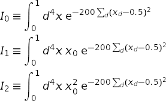
From these integrals we determine the mean and width of the distribution projected onto one of the axes:
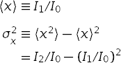
This can be done using the following code:
import vegas
import math
import gvar as gv
def f(x):
dx2 = 0.0
for d in range(4):
dx2 += (x[d] - 0.5) ** 2
f = math.exp(-200 * dx2)
return [f, f * x[0], f * x[0] ** 2]
integ = vegas.Integrator(4 * [[0, 1]])
# adapt grid
training = integ(f, nitn=10, neval=2000)
# final analysis
result = integ(f, nitn=10, neval=10000)
print('I[0] =', result[0], ' I[1] =', result[1], ' I[2] =', result[2])
print('Q = %.2f\n' % result.Q)
print('<x> =', result[1] / result[0])
print(
'sigma_x**2 = <x**2> - <x>**2 =',
result[2] / result[0] - (result[1] / result[0]) ** 2
)
print('\ncorrelation matrix:\n', gv.evalcorr(result))
The code is very similar to that used in the previous section. The
main difference is that the integrand function and vegas
return arrays of results — in
both cases, one result for each of the three integrals. vegas always adapts to
the first integrand in the array. The Q value is for all three
of the integrals, taken together.
The code produces the following output:
I[0] = 0.00024677(17) I[1] = 0.000123397(85) I[2] = 0.000062322(45)
Q = 0.49
<x> = 0.500056(59)
sigma_x**2 = <x**2> - <x>**2 = 0.0024974(83)
correlation matrix:
[[ 1. 0.98520462 0.94374824]
[ 0.98520462 1. 0.98591163]
[ 0.94374824 0.98591163 1. ]]
The estimates for the individual integrals are separately accurate to
about ±0.07%,
but the estimate for 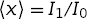
is accurate to ±0.01%.
This is almost an order
of magnitude (8x) more accurate than we would obtain absent correlations.
The correlation matrix shows that there is 98% correlation between the
statistical fluctuations in estimates for 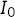 and ,
and so the bulk of these fluctuations cancel in the ratio.
The estimate for the variance  is 51x more accurate than we would
have obtained had the integrals been evaluated separately. Both estimates
are correct to within the quoted errors.
is 51x more accurate than we would
have obtained had the integrals been evaluated separately. Both estimates
are correct to within the quoted errors.
The individual results are objects of type gvar.GVar, which
represent Gaussian random variables. Such objects have means
(result[i].mean) and standard deviations (result[i].sdev), but
also can be statistically correlated with other gvar.GVars.
Such correlations are handled automatically by gvar when
gvar.GVars are combined with each other or with numbers in
arithmetical expressions. (Documentation for gvar can be found
at http://pythonhosted.org/gvar or with the source code
at https://github.com/gplepage/gvar.git.)
Integrands can return dictionaries instead of arrays. The example above, for example, can be rewritten as
import vegas
import math
import gvar as gv
def f(x):
dx2 = 0.0
for d in range(4):
dx2 += (x[d] - 0.5) ** 2
f = math.exp(-200 * dx2)
return {'1':f, 'x':f * x[0], 'x**2':f * x[0] ** 2}
integ = vegas.Integrator(4 * [[0, 1]])
# adapt grid
training = integ(f, nitn=10, neval=2000)
# final analysis
result = integ(f, nitn=10, neval=10000)
print(result)
print('Q = %.2f\n' % result.Q)
print('<x> =', result['x'] / result['1'])
print(
'sigma_x**2 = <x**2> - <x>**2 =',
result['x**2'] / result['1'] - (result['x'] / result['1']) ** 2
)
which returns the following output:
{'1': 0.00024677(17),'x': 0.000123397(85),'x**2': 0.000062322(45)}
Q = 0.49
<x> = 0.500056(59)
sigma_x**2 = <x**2> - <x>**2 = 0.0024974(83)
The result returned by vegas is a dictionary using the same keys as the
dictionary returned by the integrand. Using a dictionary with descriptive
keys, instead of an array, can often make code more intelligible, and,
therefore, easier to write and maintain. Here the values in the integrand’s
dictionary are all numbers; in general, values can be either numbers or
arrays (of any shape).
Faster Integrands¶
The computational cost of a realistic multidimensional integral
comes mostly from
the cost of evaluating the integrand at the Monte Carlo sample
points. Integrands written in pure Python are probably fast
enough for problems where neval=1e3 or neval=1e4 gives
enough precision. Some problems, however, require
hundreds of thousands or millions of function evaluations, or more.
We can significantly reduce the cost of evaluating the integrand
by using vegas’s batch mode. For example, replacing
import vegas
import math
def f(x):
dim = len(x)
norm = 1013.2118364296088 ** (dim / 4.)
dx2 = 0.0
for d in range(dim):
dx2 += (x[d] - 0.5) ** 2
return math.exp(-100. * dx2) * norm
integ = vegas.Integrator(4 * [[0, 1]])
integ(f, nitn=10, neval=2e5)
result = integ(f, nitn=10, neval=2e5)
print('result = %s Q = %.2f' % (result, result.Q))
by
import vegas
import numpy as np
@vegas.batchintegrand
def f_batch(x):
# evaluate integrand at multiple points simultaneously
dim = x.shape[1]
norm = 1013.2118364296088 ** (dim / 4.)
dx2 = 0.0
for d in range(dim):
dx2 += (x[:, d] - 0.5) ** 2
return np.exp(-100. * dx2) * norm
integ = vegas.Integrator(4 * [[0, 1]])
integ(f_batch, nitn=10, neval=2e5)
result = integ(f_batch, nitn=10, neval=2e5)
print('result = %s Q = %.2f' % (result, result.Q))
reduces the cost of the integral by an order of magnitude. Internally vegas
processes integration points in batches. (vegas parameter nhcube_batch
determines the number of integration
points per batch (typically 1000s).) In batch mode,
vegas presents integration points to the integrand in batches
rather than offering them one at a
time. Here, for example, function f_batch(x) accepts an array of integration
points — x[i, d] where i=0... labels the integration point and
d=0... the direction — and returns an array of integrand values
corresponding to those points. The decorator
vegas.batchintegrand() tells vegas that it should send
integration points to f(x) in batches.
An alternative to a function decorated with vegas.batchintegrand() is
a class derived from vegas.BatchIntegrand that
behaves like a batch integrand:
import vegas
import numpy as np
class f_batch(vegas.BatchIntegrand):
def __init__(self, dim):
self.dim = dim
self.norm = 1013.2118364296088 ** (dim / 4.)
def __call__(self, x):
# evaluate integrand at multiple points simultaneously
dx2 = 0.0
for d in range(self.dim):
dx2 += (x[:, d] - 0.5) ** 2
return np.exp(-100. * dx2) * self.norm
f = f_batch(dim=4)
integ = vegas.Integrator(f.dim * [[0, 1]])
integ(f, nitn=10, neval=2e5)
result = integ(f, nitn=10, neval=2e5)
print('result = %s Q = %.2f' % (result, result.Q))
This version is as fast as the previous batch integrand, but is potentially more flexible because it is built around a class rather than a function.
The batch integrands here are fast because they are expressed in terms
numpy operators that act on entire arrays — they evaluate the
integrand for all integration points in a batch at the same time.
That optimization is not always possible or simple.
It is unnecessary if we write the integrand in Cython, which
is a compiled hybrid of Python and C. The Cython version
of the (batch) integrand is:
# file: cython_integrand.pyx
import numpy as np
# use exp from C
from libc.math cimport exp
def f_batch(double[:, ::1] x):
cdef int i # labels integration point
cdef int d # labels direction
cdef int dim = x.shape[1]
cdef double norm = 1013.2118364296088 ** (dim / 4.)
cdef double dx2
cdef double[::1] ans = np.empty(x.shape[0], float)
for i in range(x.shape[0]):
# integrand for integration point x[i]
dx2 = 0.0
for d in range(dim):
dx2 += (x[i, d] - 0.5) ** 2
ans[i] = exp(-100. * dx2) * norm
return ans
We put this in a separate file called, say,
cython_integrand.pyx, and rewrite the main code as:
import numpy as np
import pyximport
pyximport.install(inplace=True)
import vegas
from cython_integrand import f_batch
f = vegas.batchintegrand(f_batch)
integ = vegas.Integrator(4 * [[0, 1]])
integ(f, nitn=10, neval=2e5)
result = integ(f, nitn=10, neval=2e5)
print('result = %s Q = %.2f' % (result, result.Q))
Module pyximport is used here to cause the Cython
module cython_integrand.pyx to be compiled the first time
it is imported. The compiled code is used in subsequent
imports, so compilation occurs only once.
Batch mode is also useful for array-valued integrands. The code from the previous section could have been written as:
import vegas
import gvar as gv
import numpy as np
dim = 4
@vegas.batchintegrand
def f(x):
ans = np.empty((x.shape[0], 3), float)
dx2 = 0.0
for d in range(dim):
dx2 += (x[:, d] - 0.5) ** 2
ans[:, 0] = np.exp(-200 * dx2)
ans[:, 1] = x[:, 0] * ans[:, 0]
ans[:, 2] = x[:, 0] ** 2 * ans[:, 0]
return ans
integ = vegas.Integrator(4 * [[0, 1]])
# adapt grid
training = integ(f, nitn=10, neval=2000)
# final analysis
result = integ(f, nitn=10, neval=10000)
print('I[0] =', result[0], ' I[1] =', result[1], ' I[2] =', result[2])
print('Q = %.2f\n' % result.Q)
print('<x> =', result[1] / result[0])
print(
'sigma_x**2 = <x**2> - <x>**2 =',
result[2] / result[0] - (result[1] / result[0]) ** 2
)
print('\ncorrelation matrix:\n', gv.evalcorr(result))
Note that the batch index (here :) always comes first. An extra
(first) index is also added to each value in the dictionary returned
by a dictionary-valued batch integrand: e.g.,
dim = 4
@vegas.batchintegrand
def f(x):
ans = {}
dx2 = 0.0
for d in range(dim):
dx2 += (x[:, d] - 0.5) ** 2
ans['1'] = np.exp(-200 * dx2)
ans['x'] = x[:, 0] * ans['1']
ans['x**2'] = x[:, 0] ** 2 * ans['1']
return ans
Multiple Processors¶
vegas supports multi-processor evaluation of integrands using MPI,
via the Python module mpi4py (which must be installed separately).
This can shorten execution time
substantially when the integrand is costly to evaluate.
MPI support works for any integrand. For example, the script
# file: ridge.py
import vegas
import numpy as np
# Integrand: ridge of N Gaussians spread evenly along the diagonal
def ridge(x):
N = 10000
x0 = np.arange(0.0, N) / (N - 1.)
dx2 = 0.0
for xd in x:
dx2 += (xd - x0) ** 2
return np.average(np.exp(-100. * dx2)) * (100. / np.pi) ** (len(x) / 2.)
def main():
integ = vegas.Integrator(4 * [[0, 1]])
# adapt
integ(ridge, nitn=10, neval=1e4)
# final results
result = integ(ridge, nitn=10, neval=1e4)
if integ.mpi_rank == 0:
print('result = %s Q = %.2f' % (result, result.Q))
if __name__ == '__main__':
main()
can be run on 2 processors using
mpirun -np 2 python ridge.py
This cuts the run time almost in half. The speed is not exactly doubled because time is required to move integration results between the different CPUs. The code uses the MPI rank of the processes so that only one of them prints out results:
result = 0.8559(39) Q = 0.52
Note that the random number generator used by vegas must be
synchronized so that it
produces the same random numbers on the different processors. This
happens automatically for the default random-number generator
(unless vegas.Integrator parameter sync_ran
is set to False).
vegas’s batch mode makes it possible to implement other strategies
for distributing integrand evaluations across multiple processors.
For example, we can create a class parallelintegrand
whose function is similar to decorator vegas.batchintegrand(),
but where Python’s
multiprocessing module provides parallel processing:
import multiprocessing
import numpy as np
import vegas
class parallelintegrand(vegas.BatchIntegrand):
""" Convert (batch) integrand into multiprocessor integrand.
Integrand should return a numpy array.
"""
def __init__(self, fcn, nproc=4):
" Save integrand; create pool of nproc processes. "
self.fcn = fcn
self.nproc = nproc
self.pool = multiprocessing.Pool(processes=nproc)
def __del__(self):
" Standard cleanup. "
self.pool.close()
self.pool.join()
def __call__(self, x):
" Divide x into self.nproc chunks, feeding one to each process. "
nx = x.shape[0] // self.nproc + 1
# launch evaluation of self.fcn for each chunk, in parallel
results = self.pool.map(
self.fcn,
[x[i*nx : (i+1)*nx] for i in range(self.nproc)],
1,
)
# convert list of results into a single numpy array
return np.concatenate(results)
Then fparallel = parallelintegrand(f, 4), for example, will create a
new integrand fparallel(x) that uses 4 CPUs. Python’s
multiprocessing module has limitations, particularly on Windows
machines, which make this approach to multi-processing less robust than
MPI.
Sums with vegas¶
The code in the previous sections is inefficient in the way it
handles the sum over 10,000 Gaussians. It is not necessary to include every
term in the sum for every integration point. Rather we can sample the sum,
using vegas to do the sampling. The trick is to replace the sum with
an equivalent integral:
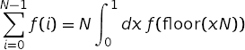
where 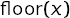 is the largest
integer smaller than 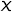. The
resulting integral can then be handed to vegas. Using this trick,
the integral in the previous section can be re-cast as a 5-dimensional
integral:
import vegas
import numpy as np
# Integrand: ridge of N Gaussians spread evenly along the diagonal
def ridge(x):
N = 10000
dim = 4
x0 = np.floor(x[-1] * N) / (N - 1.)
dx2 = 0.0
for xd in x[:-1]:
dx2 += (xd - x0) ** 2
return np.exp(-100. * dx2) * (100. / np.pi) ** (dim / 2.)
def main():
integ = vegas.Integrator(5 * [[0, 1]])
# adapt
integ(ridge, nitn=10, neval=5e4)
# final results
result = integ(ridge, nitn=10, neval=5e4)
print('result = %s Q = %.2f' % (result, result.Q))
if __name__ == '__main__':
main()
This code gives a result with the same precision, but is 5x faster than the code in the previous section. (The difference would be much larger if both integrands were coded in Cython. Also running the code on two processors with MPI again cuts the time almost in half.)
The same trick can be generalized to sums over multiple indices, including sums
to infinity. vegas will provide Monte Carlo estimates of the sums, emphasizing
the more important terms.
vegas as a Random Number Generator¶
A vegas integrator generates random points in its integration volume from a
distribution that is optimized for integrals of whatever function it
was trained on. The integrator
provides low-level access to the random-point generator
through the iterators vegas.Integrator.random() and
vegas.Integrator.random_batch().
To illustrate, the following code snippet estimates the integral of function
f(x) using integrator integ:
integral = 0.0
for x, wgt in integ.random():
integral += wgt * f(x)
Here x[d] is a random point in the integration volume and wgt is the
weight vegas assigns to that point in an integration. The iterator generates
integration points and weights corresponding to a single iteration of the
vegas algorithm. In practice, we would train integ on a function whose
shape is similar to that of f(x) before using it to estimate the integral
of f(x).
It is usually more efficient to generate and use integration points in
batches. The vegas.Integrator.random_batch() iterator does just
this:
integral = 0.0
for x, wgt in integ.random_batch():
integral += wgt.dot(batch_f(x))
Here x[i, d] is an array of integration points, wgt[i] contains the
corresponding weights, and batch_f(x) returns an array containing the
corresponding integrand values.
The random points generated by vegas are stratified into hypercubes: vegas
uses transformed integration variables to improve its Monte Carlo
estimates. It further improves those estimates by subdividing the
integration volume in the transformed variables into a large number of
hypercubes, and doing a Monte Carlo integral in each hypercube separately.
The final result is the sum of the results from all the hypercubes.
To mimic a full vegas integral estimate using the iterators above, we need
to know which points belong to which hypercubes. The following code
shows how this is done:
integral = 0.0
variance = 0.0
for x, wgt, hcube in integ.random_batch(yield_hcube=True):
wgt_fx = wgt * batch_f(x)
# iterate over hypercubes: compute variance for each,
# and accumulate for final result
for i in range(hcube[0], hcube[-1] + 1):
idx = (hcube == i) # select array items for h-cube i
nwf = np.sum(idx) # number of points in h-cube i
wf = wgt_fx[idx]
sum_wf = np.sum(wf) # sum of wgt * f(x) for h-cube i
sum_wf2 = np.sum(wf ** 2) # sum of (wgt * f(x)) ** 2
integral += sum_wf
variance += (sum_wf2 * nwf - sum_wf ** 2) / (nwf - 1.)
# answer = integral; standard deviation = variance ** 0.5
result = gvar.gvar(integral, variance ** 0.5)
Here hcube[i] identifies the hypercube containing x[i, d].
Implementation Notes¶
This implementation relies upon Cython for its speed and
numpy for array processing. It also uses matplotlib
for graphics and mpi4py for MPI support, but graphics
and MPI are optional.
vegas also uses the gvar module (pip install gvar).
Integration results are returned as objects of type
gvar.GVar, which is a class representing Gaussian
random variables (i.e., something with a mean and standard
deviation). These objects can be combined with numbers and
with each other in arbitrary arithmetic expressions to
get new gvar.GVars with the correct standard
deviations, and properly correlated with other
gvar.GVars — that is the tricky part.